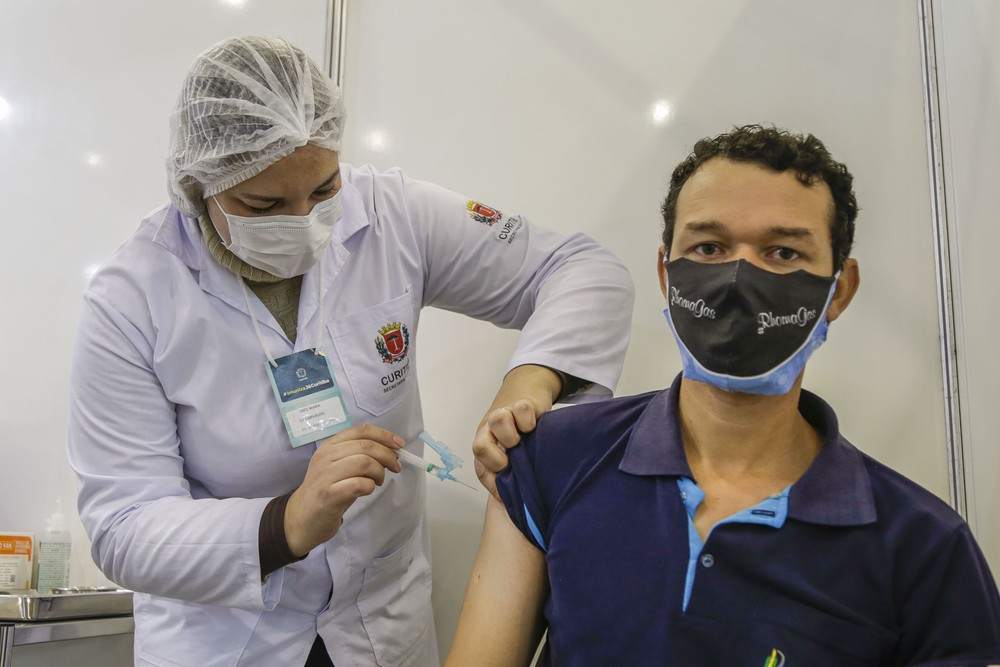
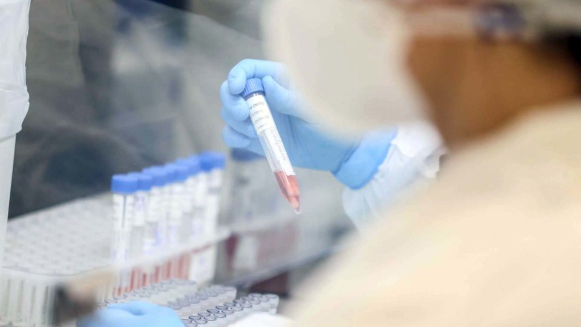
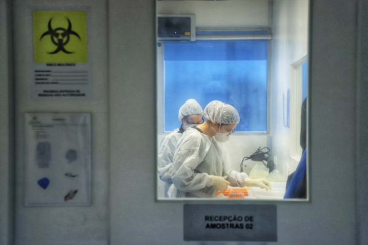
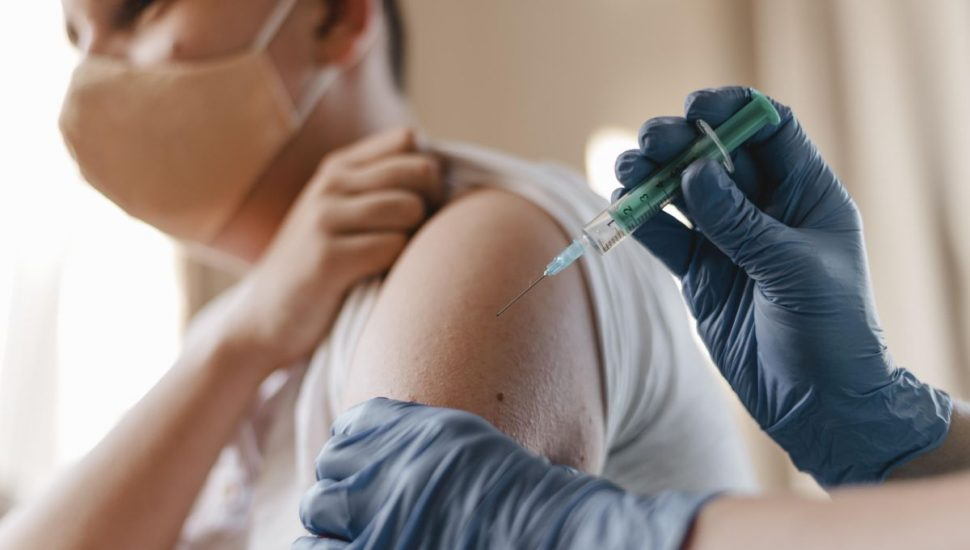
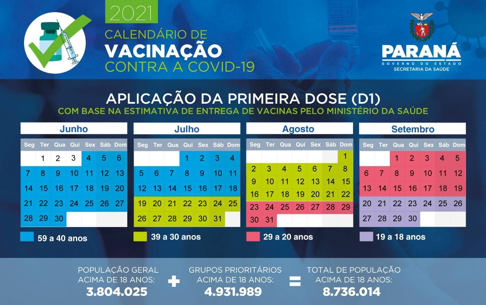

Curitiba reabre pontos de vacinação para aplicação da 2ª dose na quinta (15) e sexta (16)
Data de aplicação deve ser conferida pelo aplicativo 'Saúde Já'. Retomada da vacinação com a 1ª dose depende do envio de mais imunizantes pelo Ministério da Saúde, informou a prefeitura.
Curitiba vai reabrir os 17 pontos de vacinação para aplicação da segunda dose da vacina contra a Covid-19 na quinta-feira (15) e na sexta-feira (16). Veja mais abaixo o cronograma.
A vacinação com a primeira dose continua suspensa e depende do envio de mais imunizantes pelo Ministério da Saúde, informou a prefeitura. O último grupo a receber a primeira dose foram as pessoas de 40 anos ou mais, no sábado (10).
A partir de quinta, as pessoas que receberam a primeira dose poderão consultar a data que devem comparecer para a segunda dose pela plataforma Saúde Já.
A aplicação com a segunda dose será para quem foi imunizado com as vacinas da AstraZeneca e CoronaVac:
- Quem recebeu a primeira dose da CoronaVac em 16, 17 e 18 de junho – 2ª dose será na quinta (15)
- Quem recebeu a primeira dose da AstraZeneca em 19, 20 e 22 de abril – 2ª dose será na quinta (15)
- Quem recebeu a primeira dose da AstraZeneca em 23 de abril – 2ª dose será na sexta (16)
Para receber a segunda dose, é necessário apresentar documento com foto, CPF e uma caneta para preenchimento do formulário de vacinação. Os grupos de professores e trabalhadores da educação e pessoas com comorbidades também devem levar a documentação obrigatória.
Caso a pessoa tenha tomado a vacina contra a gripe, é preciso respeitar o intervalo mínimo de 14 dias entre as duas vacinas.
Confira alguns pontos de vacinação em Curitiba:
Coronavírus: Curitiba registra mais 21 mortes e 740 novos casos
A Secretaria Municipal da Saúde de Curitiba registrou, nesta terça-feira (13), 740 novos casos de infecção pelo coronavírus e mais 21 mortes em decorrência da Covid-19. Dezessete destes óbitos ocorreram nas últimas 48 horas. As vítimas são 15 homens e seis mulheres, com idades entre 24 e 81 anos. Quatorze pessoas tinham menos de 60 anos.
Além disso, de acordo com a pasta, nesta terça-feira (13), a taxa de ocupação dos 530 leitos de UTI do SUS exclusivos para pacientes com sintomas da Covid-19 está em 72%. Restam 149 leitos livres. A taxa de ocupação dos 552 leitos de enfermaria do SUS para Covid-19 está em 66%. Há 190 leitos vagos.
Desde o início da pandemia até o momento, são 6.410 mortes e 250.313 infectados, dos quais 236.731 estão liberados do isolamento e sem sintomas da doença. São 7.172 casos ativos na cidade, correspondentes ao número de pessoas com potencial de transmissão do vírus.
Paraná confirma mais um caso da variante delta do coronavírus; mulher morava na Grande Curitiba
A Secretaria da Saúde do Paraná confirmou nesta quarta-feira (14) o oitavo caso da variante delta no Estado. Trata-se de uma mulher, de 46 anos, residente em São José dos Pinhais (2ª Regional de Saúde), na Região Metropolitana de Curitiba. Como os sete anteriores, este caso da variante B.1.617.2 também foi confirmado por sequenciamento genômico realizado pela Fundação Oswaldo Cruz (Fiocruz), no Rio de Janeiro.
A mulher apresentou sintomas de Covid-19 em 15 de junho, realizou RT-PCR no dia 16 de junho, foi internada, mas não resistiu e foi a óbito no dia 18 de junho. Com esse novo caso, são quatro óbitos confirmados de contaminados pela variante. A Regional Metropolitana de Saúde fará uma investigação epidemiológica dos contatos.
CASOS – O primeiro caso confirmado da variante delta no Paraná foi em 2 de junho, em Apucarana, em uma mulher de 71 anos. Ela detectou a Covid-19 na segunda quinzena de abril, chegou a ser internada, mas teve alta no início de maio e está bem.
Na sequência, outros três casos envolveram pessoas do mesmo grupo familiar ou contatos próximos. O segundo confirmado foi de uma gestante, que teve contato com a filha do primeiro caso. Ela foi a óbito e o bebê, que teve resultado negativo para a Covid-19, está bem. O terceiro, um homem de 74 anos, marido do primeiro caso, também está bem. O quarto caso, ainda no mesmo “cluster” foi do filho do primeiro caso, um homem de 58 anos. Ele morreu em meados de maio.
No dia 8 de julho foram confirmados outros três casos. Pela ordem de confirmação: um homem de 60 anos em Francisco Beltrão, que teve alta e está bem; um homem de 28 anos em Mandaguari, que foi a óbito; e uma mulher de 59 anos de Rolândia, que está bem.
DADOS – Desde o começo da pandemia 676 amostras foram sequenciadas, sendo 422 para a variante P.1 (Gama, brasileira). Dessas, duas pacientes coletaram duas amostras em períodos diferentes, sendo constatado P.1 em ambas, portanto, foram contabilizadas apenas uma vez. Portanto, são considerados 420 casos.
Cidades anunciam vacinação para menores de 18 anos. Em Curitiba, como fica?
A vacinação contra a covid-19 segue a passos lentos no Brasil. Os municípios buscam acelerar a imunização e já começam a pensar na aplicação da vacina em menores de idade. O governo de São Paulo anunciou neste fim de semana que adolescentes entre 12 e 17 anos serão beneficiados no mês de agosto. E Curitiba, tem alguma previsão para este grupo? Procurada, a prefeitura informou que adota cautela e prefere aguardar.
Apesar de estarmos em pandemia do coronavírus há um ano e quatro meses, o assunto relacionado à vacinação de menores de idade ainda causa discussão entre especialistas. No Brasil, apenas a vacina da Pfizer está autorizada para ser usada em adolescentes a partir dos 12 anos de idade. Aliás, a liberação só ocorreu pela Agência Nacional de Vigilância Sanitária (Anvisa), em junho.
Segundo a Anvisa, a ampliação da idade em adolescentes foi aprovada depois de a Pfizer apresentar estudos que indicaram a segurança e eficácia da vacina para este grupo. Os estudos foram desenvolvidos fora do Brasil e avaliados pela agência. Em 31 de março, a Pfizer e a BioNTech, que desenvolveram a vacina juntas, anunciaram que ela teve 100% de eficácia em adolescentes com idades entre 12 e 15 anos.
Neste fim de semana, o governo de São Paulo anunciou que pretende começar a vacinar adolescentes de 12 a 17 anos no dia 23 de agosto. Além do estado vizinho, a prefeitura de São Luís, no Maranhão, divulgou que está aberto o cadastro para adolescentes de 12 a 17 anos se vacinarem contra a covid-19. O cadastro do novo público-alvo é realizado por um aplicativo.
E aí, Curitiba?
Na capital paranaense, não foi divulgado o plano de vacinação para os adolescentes. Em nota, a prefeitura relatou que Curitiba aguarda inclusão do grupo no Plano Nacional de Operacionalização da Vacinação contra Covid-19, do Ministério da Saúde, bem como o repasse de doses de imunizantes destinados para esse público.
Vale reforçar que qualquer imunizante depende do governo federal e no caso da Pfizer, o contrato prevê a chegada de 100 milhões de doses no segundo semestre de 2021. O Ministério da Saúde já negocia novas remessas para 2022. A vacina produzida pela farmacêutica norte-americana Pfizer, em parceria com a empresa alemã BioNTech, conta com um esquema de duas doses.
Em contato com Secretaria Estadual de Saúde (SESA), responsável pela distribuição de vacina aos municípios paranaenses, o estado também informou que aguarda a definição do Ministério da Saúde sobre a vacinação por idade.
Governo do Estado divulga calendário de vacinação contra a Covid-19 para população em geral
O Governo do Estado divulgou nesta quarta-feira (16) o calendário de vacinação contra a Covid-19 para população geral acima de 18 anos. Segundo o levantamento da Secretaria de Estado da Saúde, 3.804.025 paranaenses deste grupo devem tomar pelo menos a primeira dose do imunizante até 30 de setembro.
“Vamos vacinar toda a população do Paraná com pelo menos uma dose até o final de setembro, criando uma imunização importante para proteger as famílias paranaenses. O compromisso do Estado com o apoio dos municípios é acelerar a vacinação e fazer com que a vacina chegue até o maior número de pessoas, no menor tempo possível”, afirmou o governador Carlos Massa Ratinho Junior.
O anúncio formal foi feito pelo governador na segunda-feira (14). A expectativa leva em consideração a manutenção do cronograma do governo federal. Ao todo, 8.736.014 paranaenses devem ser imunizados.